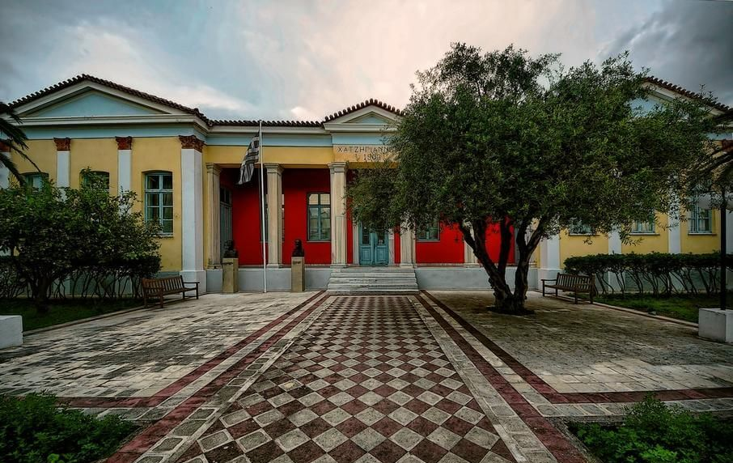
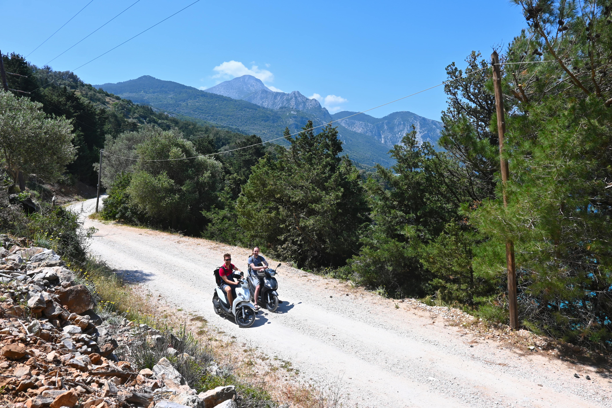

Turing Scheme

While in the final year of my doctoral training with University of Bournemouth, I have been fortunate enough to be selected as a receipient of a prestigious Turing Scheme funding designed to support international education opportunities. In this short post, I will briefly describe my experience of visiting Samos in Greece.
The Turing Scheme is the UK government's program that offers funding for international education and training opportunities worldwide. Thanks to my collaboration with Dr. Theodoros Kostoulas, an Associate Professor at the University of the Aegean's Department of Information and Communication Systems Engineering in Samos, I applied for funding through the Turing Scheme and was fortunate to be selected.
The University of the Aegean is a public, multi-campus university located in various locations across Greece. Samos Island, situated in the eastern Aegean Sea near the coast of Turkey, is famous for its rich history, stunning landscapes, and being the birthplace of the renowned ancient mathematician and philosopher, Pythagoras.
Samos Island is a Greek island located in the eastern Aegean Sea, near the coast of Turkey. It is renowned for its rich history, scenic landscapes, and the birthplace of famous ancient mathematician and philosopher, Pythagoras. Samos features beautiful mountains and beaches, something I definitely took an advantage of in my spare time. Pictured below is my friend (right) and myself (left) on a little weekend adventure.

The Experience
I happened to be overseas shortly before the start of the programme which made the journey somewhat challenging. No direct flights meant a 2 day journey was required with an overnight stay in Athens (travel tip: prayer rooms are a great place to rest from the noisy airport). Getting to Samos was probably the most difficult part of the entire process. Application process was a relatively simple task thanks to the support of the Bournemouth University staff.
Due to the off-season timing, I managed to secure a great deal for hotel accommodation at a monthly rate. The hotel, run by a warm and welcoming family, had a unique setup where they all gathered in the lobby to eat, sleep, and relax. This created a relaxed and cozy atmosphere that I haven't come across in many other places. Despite the language barrier, which initially seemed like a potential challenge, I quickly discovered that it wasn't a major issue. The locals, including the hotel staff, were incredibly friendly and resourceful, relying on a combination of body language, gestures, and even Google Translate to communicate. A lot of smiles and the willingness to try to speak the language went a long way (although most young people spoke fluent English). However, one aspect that proved to be a major challenge for me was dancing. Encouraged by a group of locals, and perhaps with a little help from the local red wine, I reluctantly attempted the traditional Greek dance known as Zorba—with amusing results.
Work
While I made the most of my limited free time by engaging in exciting activities and exploring the area, my main purpose for being there was research. Dr. Kostoulas, specialising in machine learning and multimodal interaction, was an invaluable collaborator. Earlier in the year, I conducted a highly intricate study involving the collection of diverse physiological data from various sensors, such as heart rate, respiration rate, skin conductance, and pupilometry. As the most complex study I had undertaken thus far, I sought Dr. Kostoulas' expertise to assist me in processing, synchronizing, and analyzing the acquired data. Subsequently, we applied machine learning algorithms to the processed features to tackle our classification task. As a result, I composed a research paper detailing our study and its outcomes (publication link pending).
In essence, the Turing Scheme provided me with a remarkable opportunity to venture into a foreign country, collaborate with unfamiliar faces, and work alongside a distinguished expert in my field. This experience has been invaluable in shaping my PhD journey, adding valuable insights and contributions to my research.